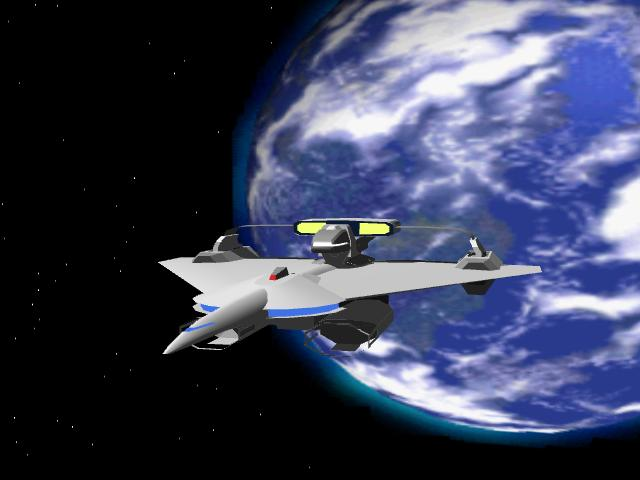

機動アイドル ミルキー･エンジェル １
よっすぃー 作
序章 「いきなり艦隊決戦？」
１
ブリッジは息を殺したような静寂に包まれていた。
コンソールから漏れる無機質なハム音のみが広いブリッジいっぱいに響き渡り、それらを操作する多くのオペレーターたちが、データー処理に忙殺されていた。
レーダーを監視するもの、僚艦との連絡を取るもの、火器管制に艦内チェック等と、オペレーターたちに与えられた役割は様々だが、彼らの目的はひとつだった。
たったひとつの目的。敵艦隊の殲滅。そのために万を超える戦力がこの宙域に集結しているのだった。
正面に据えられたモニターには、刻々と変化する敵艦隊が、模式図となって投影されていた。
オペレーターたちはこの模式図を傍らで凝視しつつ、与えられた任務を全うしながら、やがて訪れる戦いの時を待っているのだった。
これから起こる戦いは、国家や民族などという狭義なレベルの戦いではない。史上最大の艦隊戦であり宇宙戦。そしてそれは、人類の存亡を掛けた作戦でもあった。
キリスト教歴２０世紀末。人類は宇宙にその第一歩を記した。
始めは化石燃料推進による稚拙な宇宙ロケットからだったが、急速に向上する技術により、それから僅か数百年後には超光速推進機関オメガ融合エンジンを開発し、太陽系の枠を超え、第二の大航海時代へと突入した。
オメガ融合機関を手にして数光年・数十光年離れた天体へと冒険の範囲を伸ばした人類は、アルファ・ケンタリウス恒星系で発見した可住惑星を皮切りに、幾つかの植民星を手中にし、増え続ける人口問題を一挙に解決した。
そして超光速航行によるもうひとつの福音。
人類以外の知的生命体との遭遇。
ここでも人類は恵まれていた。幸運に幸運が重なり、初めて接触した生命体が、高度かつ平和的な文化思想を持つ種族だったことから、銀河系に生息する知的生命体の星間連盟である銀河連合に加盟することが出来たのだ。
もっとも、良いことがあれば悪いことがあるのも世の常で、宇宙に進出した人類には、当然のことながら試練が待っていた。
些細な……今となっては原因すら定かではない小さなきっかけから、人類は２０００光年ほど離れた、惑星国家ディラング皇国との交戦状態に発展したのである。今から５０年ほど前の話である。
会戦初期の政策不一致から初動に遅れた人類は、敗走に次ぐ敗走を重ね、火星の絶対防衛戦付近まで侵攻を許してしまい、後一歩で陥落というところまで追い詰められてしまった。
窮地に立った人類はそれまでの国家の利害を超え、全人類共通の政府組織「地球連邦」を樹立して、一致団結して戦争に臨んだ結果、ディラング皇国の大艦隊を太陽系外に押し戻すことに成功したのである。
以来半世紀。一進一退の攻防を続けていた人類とディラング皇国だったが、一ヶ月前の要塞攻略戦でディラング側の戦略拠点の攻略に成功したことにより、一挙に戦局が動いたのだ。敗色が強くなったディラング側は、起死回生の手段として、持てる戦力すべてを投入した総攻撃を敢行したのである。
それを迎え撃つ地球連邦艦隊。人類の未来を託した最後の戦いが、今まさに始まろうとしていた。
「敵艦隊、総数約１７００隻。想定旗艦を中心としたＲ−１７ポイントに集結しつつあります！」
レーダー担当士官のアラシアが状況を報告する。緊張のせいか若干声が上ずっているが、大一番を自覚したしっかりとした口調であった。
「我が方の艦隊は？」
「全艦艇９２０隻。Ｄ−３４ポイントにて待機中です。みんな閣下の命令を待っています」
「ディラング軍の総数は我が軍の二倍の数か……」
参謀たちがざわめく。ここでもまた初動の遅れが仇となり、ディラング軍との差がついたのである。
喧々諤々するブリッジの中、連邦艦隊提督のオニール中将は、３Ｄディスプレーに映る両軍の展開を見ながら、時が満ちるのをじっと待っていた。
それはまるで一瞬のようでもあり、未来永劫続く長き時間にも取れた、とらえどころのない一時だった。
「提督」
参謀の一人が瞑想中のオニールに声をかけた。
返事の代わりに薄く目を開き、懐にしまっていた懐中時計を見ると、作戦開始の時刻が迫っていた。
「艦隊の配備は？」
「先程すべて完了しました」
副官が割って入るように報告する。数こそディラング軍の半分程度だが、万全の整備と演習を重ねた精鋭艦隊たちである。
「マイクを貸してくれたまえ」
鷹揚に頷くとオニールは提督席を離れ、受け取ったマイクを持ってブリッジ中央に立つと、あたりを見回しながらゆっくり口を開いた。
「連邦艦隊全艦艇に告げる。
長かったディラングとの戦争も、この一戦で全ての決着が付く。家族を、友を、愛する人々を奪ったこの戦争も、終焉のときを迎えつつある。
しかし戦局はフィフティ・フィフティ……全くの互角だ。
つまりどちらが勝利するかは、神のみぞ知る。その結果がもたらす未来は、敢えて言うまでもないだろう。ならば我々は勝とうではないか！
明るい未来を勝ち取るために！
そのために私は号令する。
全軍、前へ！」
直立不動のまま、マイクを持った右手を握りしめて前にかざす。その先にあるのは、暗黒の大河のようなディラング軍の大艦隊だった。
その瞬間、人類史上最大の宇宙艦隊戦が開始された。
２
旗艦グローリアから発したオニールの放送は、連邦艦隊全ての艦艇に届いていた。第八遊撃艦隊所属の巡洋艦シルフィードとて、もちろん例外ではない。
「全員、今の放送聞いたわね？」
腰まで届きそうな長い髪を揺らしながら、見目麗しい女性艦長が、キャプテンシートから立ち上がり、凛とした声を張り上げる。
整った容姿に似合いの美声。それもそのはず、彼女は連邦軍随一のトップアイドルであり、なおかつ優秀な士官なのである。
ブリッジの……いや、シルフィードのクルー全てが、各々の持ち場で艦長の言葉に耳を傾けていた。
「提督の言葉通り、地球の存亡はこの一戦にかかっているわ。わたしたちの戦い如何によって、今まで通り自由を謳歌するか、ディラングの植民地に成り下がるかが決まるのよ。みんなの希望は……聞くまでも無いわよね？ この戦い、絶対に負けるわけにいかないわ！」
拳を握り力説する。穏やかな性格で、激しい感情を表に出さない彼女にしては異例の出来事だ。
「エンジン圧力臨界点に上昇」
「各砲塔、装填準備よし！」
「艦載機部隊よりＧＯシグナル届きました」
艦長の鼓舞に呼応するように、オペレーターから次々と報告が届く。
「発進準備完了です。艦長！」
すべての連絡を受け取り、副官の今井少佐が準備完了を報告した。彼女もまた艦長に負けず劣らず美貌の持ち主である。
否、副長に限らずシルフィードの搭乗員は、優希を除いて全て女性。それも超が付く美人ぞろいなのだ。連邦の艦船でもきわめて異例だが、クルーの美しさとは裏腹に、卓越した機動力を武器に縦横に活躍するシルフィードは、連邦軍内外からミルキー・エンジェルと呼ばれる特別の存在なのだ。
「了解しました。本艦は１８０秒後に発進します」
副長を介し、艦隊司令部に返答する。
そのまま正面スクリーンを凝視していた彼女だが、一度大きく首を振ると、意を決したように愛らしい口を開いた。
「沖田中尉。ちょっといいかしら？」
なんだろう？
怪訝そうな表情を浮かべながら優希は操舵席を立ち、艦長の待つキャプテンシートに向かった。
「何でしょうか？ 艦長」
緊張した面持で優希が質問する。戦闘配備中に艦長が同じブリッジにいる操舵士官を呼びつけるのは異例中の異例だ。
「そんな固い口調はやめて頂戴。戦闘配備中とは言っても、全く私語はダメって訳じゃないわよ」
皆に聞こえない小声ながら、拗ねるような仕草を見せて艦長が答える。キャプテンシートで毅然とした佇まいで指示を出すいつもの雰囲気とは大違いだ。
「作戦中ですから」
公私をわきまえて答える。もちろん普段はこんな調子ではないが、大作戦の前でいつも通りのくだけた口調など出来るはずも無い。
「もぅ、つれないわね」
「艦長が不謹慎過ぎるんです」
戦闘時ですよ。というセリフをグッと堪えて優希が答える。
「じゃあ、この戦闘が終わったら艦長室に来て頂戴。……お願い」
潤んだ目で懇願する。
「ボク、が……ですか？」
「そう、あなたよ」
「どうして？」
「言わせたいの？ わたしの口から」
座って受け答えするのがもどかしいのか、艦長はシートから立ち上がり優希と正対した。
「この戦いが人類の存亡を左右する戦いだってことは、あなたも当然知っているわね？」
ごく当たり前のことを切り出す。今対戦に従事している兵士で、そのことを知らない者などただの一人もいないだろう。
「勝ち残るための理由が欲しいの。ううん、目的ね。人間楽しみを持っていないと生きていけないもの。後でなにをしようかとかいう。それでは答えとして不足？」
必死に言葉を紡ぐ。恥ずかしさのせいか、耳元まで真っ赤だった。
優希より長身なはずの彼女の体が小さく見え、華奢な体が小刻みに震えていた。自ら立場をわきまえ毅然とした態度を見せてはいたが、彼女もまた巨大な敵に対する不安と恐怖で押し流されそうだったのだ。
そんな艦長を優希は愛しく思う。
「大丈夫。あなたならきっと勝てます。乗り越えられる」
優しく微笑むと、務めて明るい声で言った。
「絶対に？」
「絶対に」
「言い切れる？」
「神に誓いますよ」
「その証を今見せて」
「人が見ていますよ」
「構わないわ」
この人には勝てないな。
小さく肩を竦めると、優希は膝を折り、艦長の手の甲にそっと唇をつけた。
「全てはこの一戦が終わってから」
そう言って彼は自席に戻る。何故か頬が真っ赤に染まっているが、その点には触れないでおこう。
一方、抱擁を受けた方の艦長は上気した頬のまま命令を発した。
「シルフィード発進します。エンジン点火！」
軽い振動が艦全体に広がる。眠っていたオメガ融合エンジンがその一言で目覚めたのだ。
「沖田中尉！」
艦長の意図はもう分かっている。優希は動ずることなくミストラルのエンジン圧力を臨界点まで上昇させた。
「いけます。全エンジン出力マキシマムに！」
「作戦を決行します。全速前進！」
６基あるオメガ融合エンジン全てが唸り、シルフィードを先頭に第８遊撃艦隊が、斬り込み部隊として敵艦隊のど真ん中へと突撃を始めた。
「機関、最大戦速！」
「最大戦速。了解」
復唱するとスロットルレバーを一杯に引き、シルフィードを最大戦速に乗せる。巨大なＧが一瞬ブリッジを襲い優希の体をシートに押し付けるが、直ぐに重力スタビライザーによって中和された。
シルフィードはその名の通り、一陣の疾風となって敵艦隊に対峙する。
「第１、第２主砲は右舷の戦艦に照準。第３主砲は左舷駆逐艦。副砲以下の火気は各個任意に迎撃！」
矢継ぎ早に艦長の指示が飛ぶ。普段はほんわかした印象のおっとり美人だが、一旦戦闘指揮に立つと様相が一変し、頼もしさすら感じるほどの気丈さを発揮するのだ。
「全火器類、準備完了。いつでも使用できます」
ＣＩＣ（戦闘情報センター）に詰めた副長の今井が、復唱しながらインカム越しに報告する。
「主砲発射！」
「了解」
艦長の命令以下、６門の主砲から青白い輝線が放たれた。
光の鏃は躊躇うことなくディラング軍の戦闘艦に突き刺さり、漆黒の装甲板から紅蓮の炎を吹き上げさせた。
それを合図にディラング側の艦艇も一斉に反撃を開始した。
１７００隻から成るディラング艦隊の反撃は凄まじく、ナイアガラ瀑布の如くブラスターが降り注ぐ。そんな中、優希はシルフィードをまるで自分の手足のように自在に操り、銃弾の雨を右に左にと回避していった。
「座標Ａ―７４に巡洋艦１、同じく５４に戦艦２。左舷底部に突撃艇接近。後方からは戦闘機６機が接近中」
「了解」
レーダー担当士官が読み上げるデーターを頼りに、優希は巧みな操艦で銃弾の嵐をすり抜けていく。その回避能力はもはや神業といってもよかった。
まるで一流のピアニストのように、コンソール上のスイッチを繊細なタッチで操作し、ほんの僅かに残った銃弾の希薄な空間に、二百五十メートルもあるシルフィードを滑り込ませるのだ。並みのパイロットならば満足な回避行動も出来ずに、敵弾に晒され轟沈しているだろう。
「敵、ソルドップ級に主砲命中。続いてフロージア級にも命中。着弾三を確認しました」
今井からヒット報告が続く。着弾率は驚くことに九十パーセントを超える。砲術士官の技量もさることながら、回避行動をとりながらも砲撃がしやすいように絶妙なポイントに艦を動かす、優希の操艦センスがあるからこそ可能な離れ業であった。
「右舷の艦隊密度が薄いわ！ あそこを叩き、突破口とします！」
艦長が力強く宣言する。
その言葉通り、優希の見事な操艦と僚艦たちの健闘で、右舷の一角にエアポケットのような空間が出来ていた。
優希は躊躇うことなくその場所へシルフィードを導く。進軍を阻む敵艦に次々と砲撃を浴びせ、迫り来る戦闘機の一団をまるでマタドールのように鮮やかに回避しつつ、目指すポイントに突き進んでいった。
「こじ開けたぞ！」
優希が叫ぶ。それはシルフィード以下第８艦隊が、ディラング艦隊の陣形を崩した瞬間でもあった。
「シルフィードより連邦艦隊全艦へ。ＲＤ−２５ポイントに突破口確保！ この空間に攻撃を集中。敵艦隊の撃破を願います！」
すかさず艦長がオニールに報告する。この好機を狙わなければ戦局は消耗戦に発展し、勝利の行方は分からなくなくなってしまう。
「作戦は成功したわ。撤退するわよ！」
「了解。置き土産のミサイルを全方位にばら撒きます！」
今井が言うや否や大量のミサイルが発射され、無秩序に敵艦の脇腹に向かって飛び込んでいった。
ブラスターと違い速度の遅いミサイルは、容易に回避迎撃出来るため通常なら脅威とならないが、鼻先で何百発とばら撒かれたら十分な武器となる。ましてや密集体系をとっていたら、回避も迎撃も儘ならずミサイルの直撃にさらされるだけだった。
被弾したディラングの艦艇が他の同胞艦の回避を阻み、さらに次の艦艇が被弾する。うろたえ誘爆するディラング艦艇の横を、第８遊撃艦隊が一団となってすり抜ける。先頭に立つのはもちろんシルフィードだ。
「急いで！ あと２分で連邦軍の集中砲撃が始まるわ。それまでに艦隊全艦は当該宙域から離脱するのよ」
「了解」
優希は全開のバーニアを更に吹かせ、乱戦の中シルフィードを加速させる。何隻かの僚艦は、この強行についてこられずに敵艦の砲撃を喰らって被弾・轟沈していった。戦線を離脱するにしても、敵艦の密集地帯では命がけの行軍なのだ。
周囲の敵艦配置に目を光らせながら、優希は艦隊を導く。退避行動に移った今は攻撃布陣よりも、かに防御しながらこの宙域から脱出するかに神経を研ぎ澄ませているのだ。
が。
「本艦直後に敵大型戦艦！ イレギュラーです。進路予測にありません！」
予想外の出来事にレーダー担当が悲鳴を上げる。脱落した僚艦に代わって、ディラング軍の戦艦に後ろを取られたのだ。宇宙戦闘艦にとって推進機器の集中する後方は、最も防御の弱い箇所である。ここをとられるとまず勝ち目がない。
「回避！ どんな方法でもいいわ。振り切って！」
「ダメです。回避すれば他艦の集中砲火を浴びます！」
今井が叫ぶ。敵艦隊の真っただ中とあっては、それも無理のない話だ。
「ゆう……沖田中尉！」
すがる様に艦長が優希を見る。彼なら何とかしてくれるかもしれない。祈るような視線だ。
「６番エンジン切り離します！」
躊躇うことなく優希はエンジンの一基を切り離して後方に投擲した。
至近距離で投擲されたエンジンは見事に敵戦艦にヒット。大質量のオメガ融合エンジンが敵艦のブリッジを押し潰しながら爆発し、高エネルギーによる誘爆は隣接する艦をも火の海にした。
「迎撃成功！」
砲術士官ではなく、操舵士官である優希が報告する。
そんな裏ワザがあるの？ 一部始終を見ていた今井が呆然とした。
砲術士官ですら対処しようがない絶体絶命の窮地を、銃器を扱わない操舵士が一切の回避行動もとらずに切り抜けたのだ。
シルフィードに限らず連邦の宇宙艦船は、メインエンジンが切り離せる構造になっている。だがそれは被弾したエンジンの誘爆で、艦全体がダメージを受けないようにという設計思想であり、投擲に指向性を持たせているのも僚艦に当たらないための配慮である。
それを優希は武器として使用したのだ。
操艦技術、機転のよさ、センス。そのどれをとても、連邦宇宙軍で優希の右に出る操舵士はいないと言われている。今井はその一端を垣間見たような気がした。
ふと気が付くと、シルフィードは敵艦隊の集団を抜け、艦隊の背後に回っていた。
「見て」
艦長が背後に移ったディラング艦隊を指さす。
第八遊撃艦隊が、身を挺してこじ開けた突破口に、連邦の主力艦隊が群がり、戦局が一気に傾いたのである。
それはもう艦隊と呼べる代物ではなかった。ディラングの艦隊はその大半が被弾・轟沈し、敗走を始める艦まであり、戦意を完全に喪失していた。
後で聞いた話だが、突撃の先頭に立ったのは旗艦のグローリアで、オニール自らが陣頭に立ち、指揮をとったとのことだった。
「敗走する艦には構うな！ 狙うは敵の旗艦ただ一隻。各艦の最後の奮闘を期待する！」
オニールの簡潔だが力のこもった激励が各艦に伝わる。再度戦線に飛び込んだシルフィードも、二隻の駆逐艦を屠りながら敵旗艦を求める。
「敵旗艦発見！」
短い一文がブリッジに届いた。
「全砲門を集中させて下さい。目標は敵旗艦ブリッジ！ この一撃で勝負を決めます。 敵艦の攻撃を回避しつつ照準合わせて！」
艦長が叫ぶ。
「また、無茶な要求を…………」
きついオーダーに今井がぼやくが、優希の的確な操艦で激しい砲撃をかいくぐり、絶妙な位置でシルフィードの艦首が敵旗艦と相対した。
「今よ！ 全砲門、撃って！」
この一瞬のタイミングに合わせ、シルフィードの全砲門が火を噴いた。
鋭い輝線は一直線に敵旗艦のブリッジを貫き、巨大な艦を一瞬にして沈黙させた。
「後続艦ならびに艦載機部隊は動力部を狙って。一気に勝負を付けるわよ」
動きの止まった旗艦に何発ものブラスターが突き刺さる。もはや反撃の余力が残っていない敵旗艦は、回避運動らしい行動もとれず、幾条もの連続攻撃に耐え切れず爆発し宇宙の塵となった。
「やった！」
「我々の勝利だ！」
崩れ落ちる敵旗艦に連邦兵士が狂喜乱舞する。それは長かったディラング皇国との戦いに、終止符が打たれた瞬間であった。
その一部始終を見ていたオニールは再びマイクを手に取り、勝利宣言を発した。
「地球連邦軍所属の全艦に告げる。敗走する艦は捨て置け。この場にいる敵艦は武装解除すれば、それ以上の攻撃には及ばない。我々は長きに渡るディラングとの戦いに勝ったのだ！」
３
通信が切れると割れんばかりの歓声がこの宙域を埋め尽くす。もちろんそれはシルフィードとて例外ではない。艦内の随所で勝利の歓声が聞こえた。その中でミサキと優希は、静かに勝利をかみしめていた。
「ありがとう。わたしたちの……いえ、連邦宇宙軍の作戦が成功したのも、沖田大尉のおかげよ」
艦長が労いの言葉をかけに、操舵席までやって来た。かけに……いや違う。優希と一緒に祝いたくて、いてもたってもいられなかったのだ。
「い、いえ、そんな……任務ですから」
上官でしかも超のつく美人に頭を下げられ、どう対処して良いかわからず、優希はしどろもどろになる。
「ううん。沖田大尉、いいえ、優希。あなたがいたから勝てたのよ」
そんなことなどお構いなしに、潤んだ目でミサキが言う。
「買いかぶりすぎですよ」
「いいのよ。評価するはわたしなんだから」
いつの間にか２人がいるのがブリッジではなく艦長室になっていたが、緊張している優希に気が付くゆとりはない。
「軍からもこの戦いの功労は表彰されるでしょうけど、その前に……是非わたしから御礼、ううん、ご褒美を贈らせて頂戴」
長い髪をかき上げながら艦長が微笑む。さらさらの髪がなびき、香しい薫りが鼻孔をくすぐる。その艶っぽさに優希はどぎまぎする。
「ボクは…………その、与えられた任務を遂行しただけです」
なにかの一つ覚えみたいに同じ言葉を繰り返す。
「ううん、わたしがしたいの。だから気にしないで」
「ででで、でも。あ、あなたは上官だし」
唇が触れそうな距離でささやく艦長に、優希はしどろもどろになりながら、後ずさって距離を取る。
「上官だから、なんなの？」
「私室とはいえ、ここは艦内です。秩序は守らないと」
「そう……これがいけないのね」
寂しそうに笑うと、艦長は階級章の付いた上着を脱いだ。ブラウスひとつになると、豊かな胸がより一層強調される。
「これで階級の上下は関係ない。ただの男と女よ」
「歳の差が……」
「優希クンは、年上のお姉さんはキライ？」
「そ、そんなことは言ってないでしょう」
あわてて否定する優希。本当のところは照れているだけなのだが、そこは男の子。そんなことは口が裂けても言えない。
「本当ね？」
「神に誓って」
優希が答えると、艦長は嬉しそうな顔をして、彼の首に腕を巻き付けて唇を寄せてきた。
そして……………………………………………………
どてっ。
鈍い音がして、唇が冷たく固いものに触れた。
痛みに目が覚めると、彼の体はベッドから落っこちていて、フローリングの床とキスしていたのだ。
「いてててて………」
明太子のようになった唇と、紅く腫れあがった頬を押さえながら起き上がる。どうやら完全に寝惚けていたようだ。
「それにしても……」
優希は首を振る。なんという安直な夢だろう。思ったよりも自分は単純な性格なのかもしれない。壁に貼ってあるポスターを見ながら優希は苦笑する。
ミルキー・エンジェル。地球上で知らない者はいない、超人気アイドルグループだ。
その中でもリーダーの永井ミサキは特に人気があり、優希自身もお気に入りの女性だ。５歳年上だけど……
「って、こんなことしている時間じゃない！」
枕元のデジタルクロックを見て優希は慌てる。既に出発時間を大きく過ぎていた。大急ぎで身支度をし、部屋をあとにする。
沖田優希、１７歳。連邦宇宙軍・士官学校２年生の夏だった。
それにしても……
永井ミサキの姿はテレビや雑誌だけでなく、どっかで見たような顔なんだけどなぁ……
走りながら記憶をかきむしるが、どこかでリンクが切れていた。
第１章 「ウソっ！ なんでこうなるの？」
１
「おはよう」
「おーっす」
「おはよう」…………
校門で繰り広げられる挨拶の光景は、士官学校も一般の学校もそう変わるものではない。
長期化するディラング皇国との戦争のため繰り下がった就学年齢と相まって、その風景だけを見れば、ごくふつうのハイスクールと変わるところはなにもない。そして朝の下駄箱で繰り広げられる光景も、一般の学校とそう変わることはなく？
ばさばさばさ………
扉を開けると滑り落ちるように出てくる手紙が数通。読まなくたって中身は分かる、思い人への奥ゆかしい意思表示。この界隈では、未だに古典的な求愛方法がまかり通っているようだ。
優希の下駄箱は半ば郵便ポストと化しており、毎朝このようなラブレターが何通か入っているのだ。
「朝からもてるな〜。沖田は」
毎度毎度の光景を羨望半分、冷やかし半分といった風情で、クラスメイトのひとりが声をかけてきた。
１７０センチ弱と身長こそそれほど高くは無いが、マッシュルームカットのさらさらの髪に整った顔立ち、痩せぎすともいえるが保護欲をそそるスリムな体躯。それを裏打ちするような穏やかな性格で、優希は学校内でも結構人気がある。
その結果が毎朝もらうラブレターのなのだが…………
「もらって楽しいと思う？ １０通のうち９通は男からだぜ……」
げんなりしながら答える。
整った顔立ちではあるが、問答無用の女顔の優希は、女子だけでなく男子からも異常にもてる。いや、むしろ男の方に人気があるかもしれない。その証拠にもらうラブレターの実に９割が男性からで、しかもその大半が「どうして男装して士官学校に通っているのですか？」と、優希をまるで男装の麗人として扱っているのだ。
「薔薇の世界に浸りたいのなら止めないけどな」
「え、遠慮しておこう。ふつうの顔に生まれてよかったと思うよ」
しみじみと語るクラスメイト。彼の倫理観は正常なのだろう。この場にいたらまずいと思ったのか、両手をひらひらさせながら去っていった。
「ボクだって薔薇の世界に足を踏み込む気はないよ」
誰もいない下駄箱でそう毒付く。健全な精神の持ち主なら当たり前だろう。
「ったく、朝から鬱にさせないでほしいよ」
気色悪いラブレターの束をゴミ箱に葬ると、優希はのろのろと教室に向かった。
「沖田〜っ。昨日の課題、やってきたか？」
教室に入ると、クラスメイトの相沢が声をかけてきた。
１８０センチを超える身長は優希以上に細身で、櫛を入れたことがあるのか？ というようなぼさぼさの長髪。顔のあちらこちらに吹き出物があり、見るからにオタクな風貌で中身もそれを裏切らないが、その実完全なる体育会系で海兵隊志望の猛者だったりする。
「古代海戦史のレポートのこと？」
「そうそう。その……なんだっけ？ この地域で昔起こった戦争で、日本海の海戦だっけ？」
「トウゴウ・ヘイハチロウという人物が、当時の大国相手に戦術的勝利を収めたという海戦のこと？」
「そんなのだったかな？」
優希の質問に自信無げに答える。
「いい加減な参考書だってこの事件は扱っているよ。知らないなんて言ったら最悪だよ」
「俺、古典が苦手なんだよ」
露骨に顔をしかめて相沢が答えた。
「相沢〜っ。そんなこと言っていて大丈夫なのか？ 日本海海戦で開発されたＴ字戦法、今度試験に出てくるよ」
相沢と優希の会話に如月まで加わってきた。
「マジ？」
目をむいて驚く。
「マジだって」
「うそ〜っ！」
頭を抱える。実戦肌の相沢はこういった理論や講釈は苦手なのだ。
「そんなことで大丈夫か？ あの戦法、実際の宇宙戦でも使ったよ」
「ノストリア宙域のあれだろ？」
見た目はごつく、如月こそ海兵隊候補生のように見えるが、その実頭脳明晰で参謀候補なのだ。その反動故か、精神構造がかなりオタクだが……
「あの時は連邦が勝利したけど、司令官のノーラン少将が古典に長じた人だったのが、この戦法を採用した理由らしい」
優希に代わってノストリア戦のあらましを説明する。彼の説明は細かく詳細に喋らせたら授業以上に濃密だが、さすがにこの場所ではホンのさわり程度で済ませたようだ。
「ふぅーん。そうなんだ」
相沢が興味なさそうに生返事をする。非常に分かりやすい説明だったのだが、それでも理解するのは困難だったようだ。ひょっとしたら脳味噌まで筋肉で出来ているのかも知れない。
「ふぅーん。って、試験に出るかもしれないのに？」
あまりの無関心さに心配になり優希が問い返す。他人事と言ってしまえばそれまでだが、必修項目をとれずに留年する友人は見たくない。
「別に１問や２問落としたって、及第点をとればいいんだろ？」
「だけど、苦手なの、それだけじゃないだろ？」
「ぐっ……痛いところを……」
確かに１問２問なら問題ないかもしれないが、全問分からないでは、結果はもはや見えている。
「相沢ももう少し古典を勉強したほうがいいと思うぞ。意外と為になるから」
「必要になったら勉強するさ」
「試験前か？」
「そういうこと」
「では必要にしてやろう。今から小テストを行う。全員席に着け！」
よく通る声が３人の会話に割り込んできた。振り返れば軍務教官の荻久保がテキスト片手に教壇で仁王立ちしていた。講義開始の時間は既に過ぎていたのだ。
この状態の荻久保になにを言っても無駄だ。どたどたとみんなが席に着く。
「全員席に着いたな？ 今から行う。始め！」
問答無用でテストが始まった。
「古代戦史をバカにしちゃいかんぞ。先ほど沖田が言っていた中世期日本海海戦も、ゼネラル東郷は、彼の時代より更に古代の村上水軍なる海軍の海戦術を学んで体得した。その４０年後に一世を風靡した古代レシプロ戦闘機、ゼロファイターの操縦技術などは今の宇宙戦闘機教本の手本にもなっている。ハードな技術は古びても、優れたソフトは普遍的なんだ。温故知新という言葉はだてではないぞ」
テスト中だというのに一人演説を始める荻久保。実は演説の中に試験の解答が相当数含まれていたのだが、熱く語る荻久保はそのことに全く気づいてなかった。
「あはっ。こりゃ楽勝♪」
テスト中、そう思った生徒が多数いたことは公然の秘密である。
もちろんその中に優希が含まれているのは言うまでもない。
そうなるとテスト時間は恰好のコミュニケーションの場に変貌する。個人の各デスクに端末が設置された士官学校では、生徒同士で教官の目を盗んでチャットをすることも可能だ。荻久保が自分の世界に浸っているのをいいことに、早速生徒同士で情報のやり取りが始まったようだ。
その内容はというと……まぁ他愛も無いようなものばかりだ。昨日のテレビの話題や、好きなアイドルの話、クラスの誰と誰が付き合っているかなどなど。休み時間に話している内容と大差はない。休み時間にやればいいと思うのだが、こういうことは教師に隠れてこそこそやることに醍醐味があるのだ。
早々と答案を書き終えた優希は、テストの画像を閉じると窓の外に視線を向け、その先にある宇宙船ドッグに思いをはせていた。今日は確か巡洋艦シルフィードが停泊しているはずだ。
宇宙巡洋艦・シルフィード。
一介の巡洋艦であるが、この名前を知らない者はいないという、地球連邦軍一有名な艦艇だ。その理由は言うまでもなく超人気アイドル集団ミルキー・エンジェルが乗っているからである。
『宇宙船ドッグにシルフィードが停泊しているのを知っているか？』
案の定、生徒間のチャットでもそのことが話題になっていた。いろんな意味で多感な年頃の彼らにとって、それは大変重要な話題なのだ。
『もちろん』
『聞くだけ野暮だろ』
朝のワイドショーでも観ていたのか、大多数の生徒は既に情報を入手していた。
『停泊している、理由は知っている？』
『さぁ……』
『そこまでは……』
『誰か知っている？』
『今日ドッグの特設ステージで、ミルキー・エンジェルのイベントがあるからだよ』
生徒の一人が問いかけに答えた。
『ウソ!?』
『マジッ？』
『そんな情報入ってないよ』
『告知無しの緊急公演らしい』
『イベントって何時から？』
『１時から。今回は次の予定があるから１ステージしかないそうだ』
『１回だけ？』
『それしかないの？ 追加ステージは？』
『残念ながら無いんだって』
『どうして？』
『別星系の慰問とプロモ撮影を兼ねて夕方には宇宙に飛び立つらしいんだ。もともと今回のドッグ入りはそのためで、本来はイベント自身も無かったそうだけど、急遽一回だけならって決まったんだって』
『ふ〜ん。そうなんだ』
『で、観に行く？』
『もちろん！』
『当然でしょ！』
『優希は？』
漫然とモニターを見ていた優希に振られる。一瞬どきりとするが、異論があるはずも無く、即座に行くと返答する。
そうなると、後は具体的なエスケープの作戦だけ。
『いつふける？』
『次の休み時間でどうだ？』
『妥当だね』
『賛成』
悪巧みが次々進行する。士官学生とはいえ年頃の男の子だ。授業よりアイドルのイベントに興味が優先するのは仕方ないのかもしれない。
『それでき………』
と、そこまで打ち込んだところで、キーを打つ優希の手が止まってしまった。その手の先には荻久保が眉間に縦皺を作って仁王立ちしていたのだ。
「試験中になにをしている？」
大声ではないが、怒りを抑えた低い声が、優希の耳元で不気味に唸る。
「えっ、その、あの、なんというか、えーと…………」
ひきつりながら弁明の言葉を模索するが、なにを言ってもどつぼにはまりそうで、冷や汗だけが背筋を滴り落ちる。
「試験中に内職か？ いい身分だな」
「まぁ、そ、その。なんというか」
「今勉強したくないのなら、後でゆっくりさせてやろう。チャイムが鳴ったら教員室に来るように。両手いっぱいの課題を用意して待っているぞ！」
そう言うと、試験途中にもかかわらず荻久保は教室を後にした。
ワンテンポずらして教室を出て行く生徒たち。理由はひとつ、ミルキー・エンジェル見たさに授業をエスケープするからだ。
「運が悪かったな」
「ご愁傷さま」
もっともらしい慰めの言葉をかけて出て行くクラスメイトたち。もっとも口先だけで、その表情に一片の同情も無かった。
「悪いけど、後はヨロシク」
とどめに相沢からぽんと肩を叩かれる。
「ボクだけが残ってどうするんだよー！」
優希の叫び声だけが教室の中にこだました。
あーぁ。
２
ホーネット型高速機動巡洋艦「シルフィード」
紡錘形のフォルムをベースに、両舷に開いたエアインテークのような密閉型フライトデッキ。そこから張り出す大きなデルタ翼と垂直尾翼。６基のオメガ融合エンジンを備えたその姿は、史上初の超音速旅客機と言われたコンコルドなる機体を髣髴させる優美な艦である。
大型戦艦サイズの大出力オメガ融合エンジンに物を言わせた、圧倒的な加速力と機動性で、敵艦隊をかく乱することを主目的に開発された艦だが、シルフィードに限っては使用用途が大きく異なる。見た目からしてパールホワイトの艦体をベースに、ネイビーブルーとピンクのラインの入った派手な塗装を纏っていた。まるで「見てくれ」と言わんばかりに。
そして、決定的に違う理由。
シルフィード横に特設された、場違いなステージを見れば一目瞭然だろう。
じゃ〜ん♪
派手なＢＧＭとカクテル光線の中、連邦士官服をベースにした派手なコスチューム姿の女の子たちが歌って踊る。その数ざっと５０人。
タイプは様々だが、誰もがみんな下手な女優やアイドル顔負けの美貌とスタイルを誇り、プロのダンスユニットさながらに一糸乱れぬパフォーマンスは、成る程人気があるのも当然と肯ける。
もっとも彼女らは芸能人ではない。それどころか彼女らの身分は全て現役の軍人、目の前にある巡洋艦シルフィードのクルーなのである。
彼女らの名は通称、ミルキー・エンジェル。
正式名称は連邦宇宙軍広報部付独立艦隊Ａ−２７。長期化する戦争において逼迫する人材確保と、戦線での士気維持のために結成された異色の部隊である。
堅い話はさておき。
宇宙船ドックの特設ステージは興奮の坩堝と化していた。
フラッシュのように激しく明滅するスポットライトに、彼女たちから迸る汗が銀色に光る。
一挙一動に歓声が被り、ステージが大きく揺れる。
もっと激しく！ もっと強く！
ステージの興奮とともに客席のボルテージもヒートアップしていく。
手拍子！ 足拍子！ 沸きあがる歓声！ ステージはおろか広いドッグ全てが、彼女らとファンの熱気にが覆い尽くされていた。
「うぉぉぉぉぉっ！」
サビの部分にさしかかると、絶妙なタイミングで合いの手がかかる。いくら時代が進もうと、ハッピと鉢巻を付けた親衛隊は永遠に不滅なのだ。
ジャン！
決めのポーズと同時にBGMが鳴り止んだ。
間髪いれずに客席から拍手と歓声。このあたりはトップアイドルのライブとなんら変わるところはない。
拍手が鳴り止むと、中央で踊っていた長身の女性がマイクを持ち、再び壇上に立った。踊っていたときの溌剌とした印象と異なり、凛とした雰囲気を漂わせながら、ゆっくりと口を開いた。
「今日は忙しい中、わたしたちの催しに来て頂いてありがとうございました。皆さんもご存知のように、今地球はディラング皇国との長い戦争に突入して数十年。その間にたくさんのことがありました…………」
このちょっと堅苦しいメッセージが入ってくるのが、一般のアイドルとの一番の違いだろうか。それはともかく、彼女らを起用した連邦軍の目論見は大成功で、前戦での士気高揚に大いなる力を発揮し、十数年来拮抗したまま膠着状態だった戦争も、徐々にではあるが連邦有利に推移しつつあるほどだった。
「この間の一戦。第３艦隊の提督、アブダエル大佐は勇敢でした。形勢不利と分かっている戦いで……」
堅苦しいメッセージはまだ続いているが、誰も席を立とうとなどしない。
「いいなぁ〜」
「特に、リーダーのミサキさん最高！」
「超美人なのに、刺々しさが無くて優しいし。俺もあんな人を彼女に欲しいなぁ」
学校をエスケープしてここに来た如月や相沢も、ステージ上のミルキー・エンジェルにやんやの歓声をおくる。
「いやいや、サブリーダーの涼子さんも捨てがたいぞ。あの冷たくきつい瞳に射抜かれて、なにも感じないなんて男じゃないぜ！」
何故か隣の席から反論が出る。
「俺はステファニーだ」
「花梨ちゃん一押しです」
それぞれ自分の一押しを主張し、その想いを熱く語る。
「ふっふっふっ、聞いて驚くな。俺はミサキさんのシルフィード乗り込みの際のフォトを持っているんだ！」
「なにっ！」
「いつ、撮ったんだ？」
「う、売ってくれ！」
「ダメダメ。これは俺の宝物なんだから」！
かようにして、彼女らは当初の目的を見事に達成、遂行していた。まぁ……副作用として、こういうコアなファンが増えたのも否めないが…………
なにはともあれ、ライブは大盛況のうちに幕を閉じようとしていた。
「遅刻だ、遅刻だ！ 遅刻する〜ぅ！」
お約束なセリフを叫びながら優希が走る。
坂の多いこの街で全力疾走するのはかなりの労力を必要とするが、走らずにはいられない。その理由は後で説明するとして、優希がいくら成長期で体力が赤丸急上昇中としても、連続するアップダウンに息が切れ切れになっていた。
「まったく……はぁはぁ……荻久保のバカが……ひぃひぃ……無茶な……ふぅふぅ……ことを……へぇへぇ……要求するから……」
荒い息をしながら愚痴をこぼす。
優希が愚痴るのも無理が無い。試験中のチャットを咎められ、教室に一人残され補習をしていた最中、何を思ったか「ミルキー・エンジェルのリーダーのサインを貰って来い」と荻久保がマジ顔で言い放ったのだ。
「それって職権乱用じゃ……」
いきなりのことに唖然としながら問い返す。が、荻久保は全く動じない。
「その通り。思いっきり職権乱用だ！」
それどころか自ら堂々と言い切る始末。ここまですっぱり言い切れば、むしろ清々しさすら感じる。
「今日彼女らのイベントがあることは、確かな筋から入手済みだ」
そりゃそうだ。チャットウインドをしっかり覗いていたのだから。
「しかーし、残念ながら勤務時間中である私は、目の前にあるイベントに馳せ参じることが出来ない！ 教師という聖職に就いている以上、それは仕方あるまい。だが、ミサキさんのサインは是が非でも欲しい！」
涙を流す振りまでして好き放題言い放った後、白紙のサイン色紙を数枚手渡し、小声で呟いた。
「これはあくまでも私の個人的なお願いだ。拒否したところで沖田に不利益なことはなにもない無い。が、私も教師である前に人間だ。貰ってこなければ、古代海戦史の成績に些細な影響が出ない。とは、言い切れないな」
と、教師にあるまじき脅迫までしたのだ。
もちろん半分は冗談だろうが、残り半分は十分本気だった。だからこうして優希は必死に走っているのだ。
「行きますよ。行きゃ良いんでしょ！」
「そうだ。沖田は顔が可愛いから、ひょっとしたらサイン以上に美味しいことがあるかも知れないぞ」
「そんなもの無いです！」
「そうか？ まぁいい、早いところ補習を済ませて行って来いよ」
「ちょっと。こういう展開なら補習はここで打ち切りでしょ？」
「教師が公私混同できると思うか？」
言っていることが矛盾している！
泣きながら補習を終わらせ、会場に向かう優希であった。
「急がないとイベントが終わってしまう！」
時刻は既に３時半。ステージ終了時刻は２時半。その後のサイン会が、後どれだけ続いているかは神のみぞと言ったところだ。それゆえに必死になって走っているのだが……
「あれっ、沖田〜ぁ。今頃登場か？」
あと少しでイベント会場というところで、ぞろぞろと退場する一団の中に、如月や相沢たちの姿が見えた。
「誰かさんがつまんないログを書いてくれたせいで、課題をどっちゃりもらったからね」
精一杯の皮肉を言うが、彼らには通じていない。にこにこしながら「そうか。運が悪かったな」と言ったきり、さっさと話題を変えてしまった。
原因を作ったのはお前たちだろ。小さく呟くが、舞い上がっているふたりに届くはずも無い。
「その代わり良いもの見せてやるよ」
如月が大事そうに抱えていた鞄から、１枚の色紙を取り出す。
「見て驚け、羨ましがれ！ 恐れ多くもミルキー・エンジェルのメンバーのひとり、カレンちゃんの生色紙だぞ！」
「こっちもすごいぞ。同じくセラさんの生サインだ」
相沢も得意満面にサインを見せる。
「リーダーのサインは貰えたの？」
優希が尋ねる。
「無理、無理。並んでいる数がハンパじゃないって。しかも途中で「急用がある」って、サイン会を抜けちゃったし」
「だからサインを貰えたのは３０人もいないんじゃないか？」
と、２人にあっさり言われたが、理不尽な要求とはいえ優希は荻久保から、リーダーのサインを貰って来いと厳命されてしまったのだ。いないから帰ると言う訳にはいかない。そんなことしたら後の内申書が恐ろしい。
「彼女がどこに行ったのか知っている？」
少し考えて尋ねる。
「シルフィードに戻ったんじゃないか？」
「血相変えて行ったからな」
そのときの光景を思い出すように如月が答えた。
なんでもサイン会の途中で、ふと時計を見た彼女が「ごめんなさいっっ！」と一言謝ると、席を立ってシルフィードに戻っていったのだった。
「何か急ぎの用事でもあったんだろうな」
「ふーん。そうなんだ」
「それはしょうがないとして、サインを貰う方法は他に無いの？」
ここで貰えないと、なにしに来たのか分からない。
「どうしても。て、言うのなら、シルフィードに行ってみたらどうだ？」
相沢が恐ろしいことをあっさりと言う。
「シルフィードに行けだぁ？」
「サイン貰わないといけないのだろ？ だったら忍び込んで直談判するしかないわな。イベントが終わったから、警備もそんなに厳しくないんじゃないか？」
それって不法侵入ではないだろうか？ 躊躇する優希にふたりは悪魔のささやきでそそのかす。
「俺たちだってミサキさんのサインは欲しい。そのためにはシルフィードに入って彼女を探すしかない。行くならひとりよりふたり、ふたりより３人のほうが見つかる確率が高いだろう？ だから……さっ」
ぽんと渡された白い物体。数枚のサイン色紙だった。
「分担して探すぞ！」
高らかに宣言すると、ふたりは再び解体の進むイベント会場へと駆けていった。「エンジェルさま〜〜っ！」というドップラー効果を残しながら。
「な、なんなんだ。あいつら……」
あっという間に駆けていたふたりに呆然としながらひとり黄昏ていた優希だったが、やっと我にかえり、ぶつぶつ言いながらもミルキー・エンジェルがいる（と思う）シルフィードに向かって歩き出した。
「無事に忍び込めるかな？」
さぁ………………………
その答えは神様だけが知っていた。
３
ほぼ同時刻。地上に渡されたタラップを駆け上がり、居住区に向かう若い女性士官の姿があった。
永井ミサキ。２２歳。独身。言わずと知れた最強アイドル、ミルキー・エンジェルのリーダーである。
１７５センチの長身に長い手足はモデルを思わせ、駆けるたびにふわりとなびく長い髪は清楚さを強調し、鼻梁のラインも絶妙。小さく尖ったあごに澄んだ瞳と相まって、さすがアイドル。超がつくほどの美女だった。
但し、血相を変えていなければ……の、話だけど。
「あーん、もう。なんだってこんなときに限って、ジョルジュが閉まっているのよ。おかげでレジエールまで足を運ぶ羽目になっちゃったじゃない！」
走りながら閉まっていた洋菓子店に対してぶつくさ文句を言う。
確かにレジエールのシフォンケーキは美味しい。それも、とてつもなく美味だ。１個６００円とカットケーキの値段としてはかなり高価だが、それに見合うだけの内容があると彼女は確信していた。
ただ問題なのは、宇宙船ドッグからレジエールが遠いということだ。ドッグから車を出して店まで往復１時間余り。時間があればどうということはないが、次のミッション開始まで３時間と迫った状況でレジエールに行くのは辛い。美味しいケーキを味わってゆっくり食べる時間がなくなってしまうからだ。
それで今日のように急ぎのときは、比較的ドッグに近くてそこそこ美味しいジョルジェを利用しているのだが、今日に限って臨時休業だったので、無茶を承知でレジエールに買いに行ったのだ。
その結果がこの駆け足というわけである。
「それというのも、時間にルーズな所長が悪いのよ！」
走りながら愚痴をこぼす。直接の要因は彼女の言う通りで、次の予定も考慮せずにイベント時間を設定した宇宙船ドッグの所長にあるが、そもそもの原因は言い渡された予定をど忘れしていたミサキ自身だ。
「あ〜ん。もう、時間がないっ」
サイン会を途中で放棄してまで買ったケーキである、なんとしても美味しい内に食さなければ。そんな思いがミサキの足を前に進める。
「急げ！」
かけ声も勇ましく給湯室に駆け込み、予め用意しておいたダージリンをポットに入れる。ここから自室に戻ったころには、丁度いい煎れ具合になっているのは経験上マスターしていた。
「カップは確か部屋に置いてあったわよね。フォークと小皿も準備万端。早くしないと折角のダージリンが濃くなりすぎちゃう」
優雅な振る舞いでお湯を注ぎ入れていたのが一転、再び急ぎ足で駆け出していった。
それが命取りだった。
優希は道に迷っていた。
運良くイベント会場からシルフィードに潜入したまではよいが、初めて入る艦のこと、しっかり迷子になってしまったのだ。
広報用の艦とはいえ、中身はまるまる軍艦であるシルフィード。客船のような親切な案内板など艦内にあるはずも無い。遥か前方を駆けていった如月と相沢の姿はどこにも見えず、絨毯こそ敷き詰めていないが左右に同じような扉の続く、ビジネスホテルの廊下のような一角に優希は迷い込んでいた。
「ここは、どこなんだ？」
声を潜め小さく呟く。知っている人がいれば、士官用の居住エリアだとすぐに判るのだが、あいにく優希は士官ではなく士官候補生。彼が普段乗り込む実習艦には、こんな贅沢な空間は無い。
「如月に相沢。おまえたち、どこまで先に行ってしまったんだ〜？」
一人になって心細いのか、弱気な言葉が口から漏れる。実は如月と相沢は潜入直前に警備員に見つかり、事務室でこんこんと説教されているのだが、艦内を徘徊するのに必死な優希が知る由も無い。元はリーダーミサキ嬢のサインを貰うために潜入したのだが、人影が無く見知らぬ艦内で徘徊するうちに、本来の目的よりここを早く出ようという意識のほうが強くなったのだ。
そして不用意に駆け出す。それが悲劇につながるとも知らずに。
自室に急ぐべくミサキは駆けていた。
街中と違い狭い艦内通路である。右手にポット、左手にシフォンケーキの入った箱を持っての急ぎ足。しかも頭の中は、それを食べて幸せに耽ることだけでいっぱい。そうなれば前方に注意が行き届かないのは当然のこととなり、その結果引き起こされる悲劇も十分予想の範囲内にあった。そしてその予想はすぐさま現実に引き起こされた。
事故というにはあまりにも唐突過ぎた。
もうちょっとで自室という直前の十字路で、何の前触れもなく黒い影がぬっと現れたのだ。
急ブレーキ！ などできる筈もなく、行き着く先は一直線。
どん！ という鈍い音。
「きゃっ！」
「わっ！」
可愛い叫び声と無粋な叫び声がハモる。で、なにが起こるかというと…………
がんがらがっしゃーん！
派手な金属音と自分の尻餅、得体の知れない付着物のトリプル攻撃に、二人の思考がフリーズしてしまった。
「ったたたたた〜っ」
先に我に返ったのはミサキの方だった。思いっきり頭突きをしてしまったおでこを抑えつつ、ゆっくり立ち上がる。
「キミ、大丈夫……」
な、訳ないか。ミサキは慌てて優希のほうに向き直る。
「いった〜っ…………」
大半の衝撃は優希のほうに来たらしく、ミサキ以上に大きなこぶを額につくり、こちらも呻きながら起き上がる。
「ご、ゴメンなさいっっ！！ その、慌てていたもので……」
済まなさそうな表情で、ミサキがぴょこんと頭を下げた。
「慌てていたで済めば、警察なんか……って……あれ？…………」
優希が怒りの言葉を言いかけたところで、ぶつかった相手が、探していたミルキー・エンジェルのリーダーだと気付いた。
これは……ひょっとして……千載一遇のチャンスではないだろうか？
人気が高く、一般のイベントでは入手率が低いミサキのサインだが、この状況なら否応も無くもらえるのではないだろうか？ 当のミサキは申し訳なさそうに、こちらをしげしげと見つめているだけ。
今しかない！
「あ、あの！ サ、サインして下さい！」「……ひょっとして……、沖田さん家の優希クンじゃない？」
意を決して色紙を差し出しながら言った優希のセリフと、一切の脈絡なしにミサキの声が被る。
「はぃっ？」
突然名前を呼ばれ、意味不明の声を出す優希。ちょっと間抜けだが、人気アイドルの口からいきなり自分の名前を呼びつけたら、誰だって驚くだろう。
しかも、しかもだ！
「そうだ、やっぱり優希クンだ！ 久し振りっ！ 大きくなったわねぇ！」
声をかけるだけでは飽き足らず、優希の両肩までバンバン叩き出す始末。
超有名アイドルといっても過言でない彼女に肩を叩かれるのは悪い気はしないが、初対面でこの扱い。戸惑いを隠せない。
「あ、あ、あ、あのぅ……随分と馴れ馴れしいけど、ボクのことご存知なんですか？」
「あれ〜っ、忘れちゃったの？」
馴れ馴れしさに加え、ちょっとショックとでも言いたげな口調。忘れたって言うことは、彼女は自分のことを知っていたことになる。だけど、一体どこで？ ますます謎が深まり混乱する。
「あんなに仲良くしていたのに、お姉さん悲しいわ……グスン」
「え、えーと……」
（明らかにウソ泣きだが）涙声のミサキを前に、必死に記憶をたどる。自分の知り合いに、こんなきれいな女性はいただろうか？ 士官学校の先輩？ いや、それはない。彼女の年齢なら自分の入学年次とかみ合わない。
だとすると一体どんな接点だ？
ダメだ！ 思いつかない。
「ゴメンなさいっ！ 思い出せないので、ヒントをお願いします！」
考えても答えが出ず、両手を合わせて懇願する。
「そうねぇ……ミサキ。って、言えば思い出す？」
「う〜ん」と前置きした後、ミサキは小首を傾げて尋ねなおした。
「いえ、それは判っている事だから」
なにしろミルキー・エンジェルは超有名ユニットだ。そのリーダーの名前を知らない人の方が珍しいだろう。
「んじゃねぇ、リバーサイドハイツで心当たり無い？」
少し考えた後、改めて質問しなおす。
「リバーサイドハイツはボクの住んでいるところだけど……」
どうして知っているの？ ますます疑問が広がる。
「３０７号室は今誰か住んでいる？」
「そりゃ住んでいますよ。マンションなんだから」
「ふーん、そうなんだ。でもその人、住みだして１０年も経っていないでしょ？」
「６年位かな。って！ なんで知ってるの？」
プライベートなことを言い当てられて優希が驚く。３０７号室は彼が住んでいる隣の部屋だ。
「そりゃあ、ねぇ」
答えを濁らせて意味深に答え、さらにたたみかける。
「まえに住んでいた人のこと憶えている？」
まえに住んでいた人のこと？
１０年も前の話なんて、小学校に入ったばかりの頃じゃないか。そんな年代で隣の人のことなど、ちゃんと憶えているはずがない。ただ幼心に、隣の家に優しいお姉さんがいたことだけは記憶がある。
キレイというより可愛いという感じだったが、とにかく評判の美少女だったらしい。優希の思春期が訪れる前に引っ越していってしまったが、近所の男の子たちの初恋相手は十中八九彼女であったと後に聞いている。
が、隣に住む優希は知っていた。その美少女の正体は、そんな少年たちの憧れとは裏腹に、どうしようもないほどのドジ。道を歩けば石ころひとつないような歩道で平気で転ぶし、砂糖と塩を間違えることなど日常茶飯事。道ひとつ間違えれば必ず迷子になるし、一緒に遊んでもらった優希が泣かされたりと、被害を被った失敗談は数知れず。でも憎めなくて、優しくて、みんなの人気を集めていて、それから、それから……
記憶が万華鏡のようにぐるぐる回る。そう、贔屓目なんかじゃなく、とりわけボクに優しかった。「優希クンはわたしのお婿さんになる人だもんね」なんてことを言っていたくらいだから。
「どう？ なにか憶えていない？」
思考の輪にはまり込んだ優希を覗きこむように、ミサキが顔を寄せてきた。
憧れの、超の付く美人アイドルが目の前にいるのに、今は不思議とどきどきしない。むかしいた隣のお姉さんとミサキの顔がダブる。
あれっ……お姉さんて呼んでなかったな。え〜と、確か名前は……
「……ひょっとして……ミサキ姉ぇ？ 隣に住んでいた、あの？ ホントに？」
半信半疑で名前を言う。確かに同じ名前だし、年齢的には一致する。でも、まさかの思いが強く、同一人物だとは思っていなかったのだが。
「やっと思い出してくれたのね♪ お姉さん嬉しいっ！」
思い出してくれた優希に、ミサキは思いっきり抱きしめようと手を広げたが、その手を途中で引っ込めてしまった。優希の服が生クリームでべっちょりコーティングされていたので、抱きつくのを躊躇ってしまったのだ。
その原因を作ったのは一体誰なんだ？
「……それにしても優希クンって……」
そんなことはおくびにも出さず、というか全く気がつかず、それでいながら自分の服が汚れないように絶妙な距離を取りながらミサキが口を開く。
「かーいくなったわねー。昔も可愛かったけど、今なんてお目めぱっちりで「美少年満開〜ぃ」って感じだし。あ、でも、ちょっと背が低いかな？ それがまた美少年ぽさを強調するんだけど……」
言うに事欠いてそのセリフ？
「誉めてくれているみたいだけど、背が低いのは余計です！」
不満いっぱいに答える。ミサキ姉が育ちすぎなんだよ。男のボクよりも背が高いじゃないか！
コンプレックスの箇所を思いっきり指摘され、心の中で悪態をつく。確かに優希の身長は１６９センチしかなく、世間相場から見れば高い方ではないが、卑下するほど低くは無い。
ミサキの身長が１７５センチもあるから、相対的に低く見えるだけだ。
と、優希は固く信じたい。そうでないと男のアイデンティティーが……
「ま、それはそれとして、その格好はなんとかしないとね。シャワーを浴びて着替えないと、折角の美少年も台無しよ」
その原因を作ったのは自分だということを棚に上げてミサキが言う。
見れば優希の服もズボンも、シフォンケーキの生クリームと紅茶でびしょ濡れ。美少年かどうかの評価は別として、とても人前に出られる格好ではない。
一方ミサキはというと、上手に逃げたのかちゃっかりしているのか、全くといっていいほど濡れていない。優希が貧乏くじを引いた格好なのだ。
「久し振りなんだし、色々つもる話もあるから、シャワーついでにわたしの部屋にいらっしゃいよ」
根が楽天家なのか、ケーキのことなどすっかり忘れ、ミサキが提案する。
「い、いいですよ……」
照れ臭さと後ろめたさから、優希はやんわりと拒否する。
幼馴染は昔の話。今はどちらもすっかり成長し、気軽に行き来出来るような仲ではない。しかも相手は超人気アイドル。そんな気軽に呼んでいいのかと思うのだが、ミサキの方は全く気にしていないようだ。
「ダメダメ。そんな格好じゃ風邪ひくし、見苦しくて艦内を歩きまわることなんて出来ないわ。だから一緒についてくるの！」
優希に一切の拒否権を認めさせず、ミサキは強引に引っ張っていった。
４
「なにも無いけど、自分の部屋だと思って寛いでね」
って、お気楽にミサキは言うが、がちがちに緊張している優希に寛げというのは無理な話だ。
密室で男と女。しかも相手は知り合いだったとはいえ、超美人の人気アイドル。十年ものブランクがあれば初対面と大差ないだろう。
「一応、初公開。かな？ メンバー以外では優希クンが初めてよ。この部屋にお客さんをお通しするのは」
「！」
刺激的なミサキのセリフが、優希の緊張をさらに増大させた。
緊張しつつも好奇心に駆られきょろきょろと見回す。
広さにして８畳位だろうか？ カーペット敷きの清潔な部屋は、壁際にベッドとドレッサーが配置され、ベッドの奥には衣装箪笥と思しきクローゼットの扉がある。もう一方には、女の子らしいデザインのローテーブルと座り心地のよさそうなクッションが置かれており、小さいながらもトイレと一体になったユニットバスまで備え付けられた本格的な個室だった。
それにしても贅沢な。と、優希は思う。
ミサキの襟章に付いている階級は中尉。学生の身分なのでそれほど詳しくは知らないが、連邦軍の艦船でこれだけ広い個室を与えられるのって、確か佐官クラス以上からではないだろうか？ 一介の尉官クラスにこれだけ厚遇するって、ちょっと考えられない。改めてミルキー・エンジェルの凄さをまざまざと見せ付けられた恰好だ。
「どうしたの？ さっきから突っ立ったままで」
部屋に入ってずいぶん経つというのに、座ろうとしない優希に痺れを切らしミサキが声をかける。
「ど、どうにも落ち着かなくて。女の人の部屋に呼ばれたのって、初めてだから」
見透かされないように必死で言いつくろう。
「そんなこと無い筈よ。わたしの部屋に来たことがあるはずなんだから」
そんなのカウントするな！ と、小さく悪態をつく。
「そんな昔のこと持ち出すなよ」
「まぁいいわ。そのうち慣れてもらうから」
慣れるって、なにを？
「それよりさ、気持ち悪いから、先にシャワー使わせてくれない？」
怪しい方向に進みそうなので、慌てて話題をそらす。実際この恰好でずっといるのは我慢ならない。シャワーが出来るのなら、何とかしたいのが今の心境だった。
「あ、そうね。そのままじゃ座れないか。使い方は分かるわよね？」
「あのねぇ……」
幼稚園児じゃないんだから。という言葉を頭に浮かべながら、優希は逃げるようにユニットバスに入り、シャワーを浴びた。
コックをひねると熱いお湯が全身に染み渡り、立ち上がる湯気が心地よい。士官学校の練習艦「うみかぜ」のシャワー室とは雲泥の差だ。
なにせあちらは２０人でひとつのシャワーを共用。しかも艦が古いためか、ボイラーをケチっているのか、シャワーの出もひどく悪く、訓練の後のラッシュアワーは半端じゃない。ひとり５分の制限時間で満足に汗を流せたためしがない。
「うん、この勢いだよ。ノブをひねればたっぷり出てくる熱いお湯。これがホントのシャワーだって」
あまりのご機嫌ぶりに、ついつい鼻歌のひとつでも歌いたくなる。
「着替え、ここに置いておくからね」
扉越しにミサキの声がかかった。
「はーい」
軽く返事をして、優希は再びシャワーに没頭した。
たっぷり１０分間は浴びただろうか？ 身も心もさっぱりして、ユニットバスから出た優希はバスタオルで濡れた身体を拭い、用意されていた着替えを着ようとして、その場で固まってしまった。
「み、ミサキ姉っ！」
脱衣場で場違いな大声を出す。
「なに？」
「こ、こ、こ、これ……………………………………………………………………………………なんなの？」
のほほんと答えたミサキに対して、置いてある衣類に指を指す。
「ん、替えの服だけど？」
それがなにか？ ことなげにミサキが言う。
替えの服。
確かにその通りだ。きれいに畳まれたそれは洗濯もきちんとできており、着替えといっても十分通用するだろう。ただ一点の問題を除けば。
「替えの服って？ こ、この服、女物じゃないかー！」
「そりゃそうよ。わたしの着替えっていうか、少尉時代の士官服だから」
優希の抗議にあっけらかんと答える。
「着れる訳ないだろ！」
「どうして？」
「どうして。って、ミサキ姉ぇの服だよ！」
「大丈夫、汚れてないわよ。ちゃんとクリーニングして保存してあるし、優希クンならサイズも同じくらいだから、着れると思うよ」
だから、そういう問題じゃないって！ そう言いたい優希だったが、一点の曇りも無いミサキの視線に、反論しても無駄だという答えが見えていた。
「もういいから、ボクの服を返してよ！」
汚れた服でもあれよりはマシだ。
「ムリよ」
優希の希望をミサキはあっさり拒否する。
「どうして？」
「どうして？ って。あの服、生クリームがべっちょりで、とても着られないわよ」
「じゃあ、洗濯して着るから」
「乾くまでどうするの？」
「う〜っ」
「諦めて着ちゃいなさいよ。いくら空調の効いた艦内といっても、そんな格好でいたら風邪ひいちゃうわよ」
さあどうだと言わんばかり。どうしても着せたいらしい。優希は大きくため息をついた。
「わかったよ。着ればいいんだろ？ 着れば！」
とうとう諦めて優希はブラウスに手をかけた。
「ブラウスだけじゃ物足りないわね。ブラジャーもいる？」
にこにこしながらミサキが突っ込む。
「いらんわ！」
もちろん、即座に断った。
「え〜っ？ 可愛いのがあるのになぁ〜。これなんか似合うと思わない？」
そう言うと、フリルがいっぱい付いたレモンイエローの物体を差し出す。
「却下！」
「ちぇっ。つまんないの」
ミサキの意見は当然無視する。
いつものワイシャツと違い、ブラウスはボタンの止め位置が逆なので、ちょっと戸惑ってしまったが、まぁなんとかなる。ネジメタルタイを締めるにしても、プレーンノットならばなんの苦痛も無い。が、ネイビーグレーのタイトスカートを手に持つと、優希は再び固まってしまった。
これを穿けっていうのか〜？
ちらりとミサキを見たが、期待に満ちた視線で見つめているだけで、止めようという意思は全く無い。
いや、むしろ、早く穿けと言わんばかりの勢いだ。
えーい、ままよ！
最後まで抵抗していたプライドを心の隅に封印すると、意を決してスカートを身に着け、ジッパーを締めた。
「穿いたよ。これでいいんだろ！」
恥ずかしさから不機嫌に答える。顔は完全に横を向き、両手の拳は固く握られたままだった。
見る見る真っ赤になる優希を見てミサキは思った。
か、可愛いいっ！！
自分でさせておきながらその似合いっぷりに驚く。元々華奢であまり背が高くないという要素があるにせよ、ここまで「美少女」になるとは……
まるでミルキー・エンジェルのメンバーになるために、ここに来たのではないかと思えるほどだ。
でも、折角ならね。
「ダメよ、それだけじゃ。その格好をしたなら化粧もしないとね」
敢えてダメ出しをする。
やるからには徹底的にやる。ミサキの中でなにかが火がついた。もっとも優希にとっては迷惑以外の何者でもないだろうが。
「化粧って？ 口紅とかアイシャドーの、あれ？」
「当然よ」
どこが当然？ という突っ込みを入れる間も無く、無理矢理小さなソファーに座らされると、ミサキの手により顔を剃られ眉を整え、薄く化粧を施された。勢いですね毛や腕の毛までも剃られてしまい、彼の手足はつるつるになっていた。
「脇の下は今度やろうね」
「しないって！」
「うっそー？ 脇の手入れはレディーのたしなみよ」
「ボクはレディーじゃない！」
「あら、この艶姿を見せ付けといて、そんなこと言える？」
仕上げに淡いピンクのルージュを付けると、隠し持っていた手鏡を差し出す。
！！！
優希が絶句する。
鏡の中に彼の姿はなく、代わりに短いマッシュルームカットの美少女士官が映っていた。
「こ、これが……」
「これが優希クンのホントの姿よ。どう、可愛いでしょ？ 問答無用の美少女じゃない？ この可憐さにはどんな女の子だって嫉妬しちゃうわよ」
「嫉妬って、どういうことだよ？」
「言った通りよ」
言った相手が男だというのに、軽く言い流す。
「とにかく自信を持ちなさい。見ての通り優希クンは完全無欠の美少女よ。誰よりもこのわたしが保証するわ」
「そんなこと保証されてもなぁ」
「いいから、いいから。悪いけど服が乾くまでそのままでいてくれる？ 風邪ひくといけないしね」
そう言うと、汚れた服をひったくりミサキは部屋から出ていった。
後に残されたのは女装姿の優希ひとりだけ。
傍から見れば絶世の美少女が、途方に暮れた表情で扉の先を見つめているのだが、当事者である優希にとってはそんなどころでない。
「この格好でなにをしろって言うんだよ！」
ネイビーグレーのスーツにタイトスカート、華奢な体躯にすらりと伸びた脚。これでもう少し胸があったら……って、何を考えているんだ！ ボクはっ！
ぶんぶんぶん！
思いっきり左右に首を振りあらぬ妄想を振りほどくと、部屋の隅に置かれた鏡が視界に飛び込んできた。
うっ…………優希の動きが止まる。
学校の連中が「男装の麗人」と言い切る理由が痛いほど解る。憂いを秘めた美少女がそこにいるのだから。
「うそっ？ これが……ボク？ な、可愛い……」
意味不明な言葉を呟く。
鏡の中の美少女が、優希に見つめられてうっすらと頬を紅く染める。あろうことか一瞬見とれていたのだ。
次の瞬間、この美少女が己の女装姿だと思い出し、恥ずかしさにさらに真っ赤になってしまった。
とにかく、こんな恥ずかしい格好を、他人に晒す訳にはいかない。
優希とて人並みの羞恥心はある。素っ裸で出歩くのもご免こうむりたいが、女装姿を晒すのも遠慮したい。ミサキが帰ってくるまで大人しくここに篭っていようと、固く誓ったのだった。
が、そんな時に限って、往々にアクシデントはやって来る。
「ミサキ〜っ、いるぅ？」
ノックも無しに突然扉が開き、肩まであるワンレングスが印象的な、女性士官が入ってきた。たぶんミサキと同い年かひとつ上下くらい。身長はやはり高い。おっとり（天然？）美人系のミサキと違い、鋭利な刃物のような雰囲気が漂う酷薄な美人だ。
「えっ？」「なっ！」
優希とワンレングスの士官は、視線が合うと同時に、表情が凍りついた。
一方は個室に入ったら予想外の人物がいること、もう一方はいきなりの乱入者に己の恥ずかしい女装姿を見られたことで、意識がフリーズしてしまったのだ。
「えっ、えっと……ミサキ……いえ、永井中尉の個室で間違いないわよね？ ネームプレートからみても。彼女はいないの？」
実際に固まっていたのは１〜２秒間だろうか？ 先に解凍した女性士官の方からおずおずと話し掛けてきた。
「ミサキ姉ぇ……いえ、永井中尉の個室で間違いないです。今は外に出ていて、いませんけれど」
戸惑いながらも優希も答える。
「いない？ 冗談でしょ！ この忙しいときにリーダーは何しているの？」
リーダー？ そういえばそうだった。あまりの出来事にすっかり失念していたが、ここにいる女性クルーは、ミサキも含めミルキー･エンジェルのメンバー、目の前にいる彼女もそうだった。
一瞬の戸惑いの後、ワンレングスの美女がミルキー・エンジェルのサブリーダーであることを思い出した。
「ミサキ姉ぇ。じゃなくて、永井中尉は、野暮用だと言ってましたけど」
さすがにホントのことは言えず、優希は言葉を濁した。
「野暮用？ って、どうせろくな用件じゃないでしょう。そんなことはどうでもいいわ。それよかアナタ名前は？」
瞬時に真実を言い当て、苛立ちを抑えながら、女性士官は優希の名前を尋ねる。
「お、沖田優希ですけど」
勢いにつられて優希も答える。
「ふ〜ん、沖田さんね。新人さんかな？」
人差し指を自分の額にあてながら思考をめぐらす。「聞いてないんだけどなぁ……」「まぁ、いきなりってのはよくあることだし」「それでミサキの部屋によばれたのかな？」
意味不明な言葉をひとりぶつぶつ呟くと、改めて優希に向かいなおす。
「ここにいるのだからそういうことね。沖田さんね？ 憶えておくわ。私の名前は今井涼子。ネームタグ見れば分かるわね？」
ネームタグを見なくても分かりますよ、超有名人なんですから。さすがにそれは言えないが。
「寛いでいるところを悪いけど、ちょっと手伝ってくれないかな？」
言うや否や、彼女は優希の腕を掴み、ずんずんと引っ張っていった。
「ちょ、ちょっと、ボクは！」
突然の出来事に優希は叫ぶが、ワンレングスの士官はお構いなしに引っ張っていく。
「ぐずぐず言わないの。この艦の人手は足りないのだから、出来ることを出来る人がやるの。事務士官だってコンピューターの操作くらい出来るでしょ？」
いや、だから、ボクは事務士官でなく、士官候補生なんです。それに専攻は操艦なんですってば！
引っ張られながら優希は声にならない抗議を呟く。
女装した上にヘンな事を口走ったら、ヘンタイのレッテルを張られてしまうに決まっている。そのことが優希の心を縛り、反論の言葉を封じたのだ。
涼子にずりずりと引っ張られ、無理矢理エレベーターに乗せられて、優希は正面に巨大なスクリーンの広がる指令所のような部屋に連込まれた。
「ここに座って」
そう言って末席のひとつに座らされると、問答無用でワイヤレスのインカムを手渡された。
「早くつけて。システムは起動しているから、オペレーションの通りにやればいいのよ。それとシートベルトはちゃんとつけてね。加速重力を打ち消す０Gシステムは正常だけど、不測の事態には対処できないからね」
一方的にそれだけ言い放つと、彼女も隣のデスクに座り、同じようにインカムを頭に付けた。
改めて辺りをきょろきょろ見渡すと、正面スクリーンは外部の風景が、側面のマルチスクリーンには艦内の主要箇所が映し出されており、ここがシルフィードのブリッジだということに気が付いた。
どうしてこんなところに？ 改めて頭の中を疑問符がかけめぐる。
「きょろきょろしないでモニターを見る！」
「は、はい！」
叱責されて慌ててモニターを凝視する。
彼女が言う通りデスクのモニターは既に起動しており、発進プログラムが実行中であった。
発進プログラム？
ちょっと待て。こままじゃ家に帰れないどころか、宇宙の彼方に連れて行かれるじゃないか！
「大変だ！ ボ、ボク降ります！」
「なに言ってるの！ 降りれる訳ないでしょ！ いきなりブリッジに座らせたくらいでパニックにならない！」
慌てて席を離れようとした優希に、涼子の雷が落ちる。
「ルーキーでも、いえ、ルーキーだからこそ与えられたことはきちんとやりなさい！ 私もミサキも、いいえ、全てのクルーはそうしているわよ！」
そう言われたら座るしかない。優希は渋々席に着いた。
「納得したらデーターを読み上げて」
考える間も無く指示が飛ぶ。言われるままにデーターを読み上げた。
「プログラム２１まで実行、全て正常。２２のグランドチェック起動中です」
「了解。エンジン予備駆動に入りました。臨界まで後六百秒」
「各ブロックの気密確認急げ」
ブリッジ内に次々と指示が飛ぶ。
優希も言われた箇所のチェックリストを読み上げる。その心地よい緊張に自分が学生だと言う気持ちは既に無かった。
「船台ロック解除。カタパルトレールに移動」
「ロック解除確認。レール移動します」
「シルフィード移動中。発射位置まで９０秒」
「最終セーフティー解除」
「予備システムチェック完了。カウントダウン開始します」
オペレーターのひとりが準備完了を読み上げる。
後は艦長が最後の一言を発するだけで発進プログラムは完了する。
正にその時。
ブリッジ後方のリフトドアが開き、長い黒髪を揺らしながら、ミサキが慌てて入ってきた。
「遅くなって申し訳ありません！」
「リーダーのクセに遅いわよ！」
涼子がモニターを見つつ非難する。
「ゴメ〜ン。ちょっとアクシデントが発生しちゃって。後でデザート奢るから、許してよ。ね、涼子」
怒り顔の涼子に向かい、両手を合わせてミサキが懇願する。その風貌に中尉の威厳は全く無い。
「もぅ、いつもそれで逃げるんだから……少しはリーダーとしての自覚を持って頂戴！ アンタの代わりはこの娘にやってもらっているから、後でちゃんとお礼をしてときなさいよ」
涼子がデスクを指差す。そこには、緊張でひきつった顔をしながら、必死にモニターを凝視する優希が座っていた。
「優希クンがどうしてここに？」
「どうしてって？ 呼びに行ったらミサキはいないし、発進の時間は迫ってくるし、代わりにこの娘……失礼、沖田さんがいたからお願いしたのよ」
「お願いしたって、優希クンは士官じゃないのよ！」
その言葉に涼子の表情が凍る。
「ウソ？」
言うまでも無いことだが、艦船ブリッジの各シートは、正規軍人以外座ることは出来ない。宇宙祭などで艦船内部を一般公開してもセキリュリティの関係から、ブリッジとＣＩＣルームは立入禁止を貫いており、その不文律が破られたことは無い。涼子が驚くのはむしろ当然なのだ。
「ウソじゃないわよ！ 彼が着ているのは私の少尉時代の制服だし、あの子の身分は士官学校の生徒よ！」
かれ？
ミサキの言ったそのひと言に、涼子の表情だけでなく、動作までも固まる。
かれ、カレ、彼。英語で言うとhe。どんな呼称で呼ぼうと、その人称で呼ぶ性別はひとつしかない。
「お、男の子？」
ウソでしょ？ どう見たってあの娘、女の子よ。
その事実に涼子は驚愕した。
確かにマッシュルームカットのヘアスタイルは短く、そこだけを見れば男の子に見えなくはない。とは言えあの程度の短髪、船外の無重力でも活動することのある連邦宇宙軍の女性兵士には珍しくない髪型だ。そしてその姿かたち。例えどんな美少年が女装したとしても見え隠れする骨太さなどは全く無く、どこから見ても真性の美少女そのものだ。
涼子の思考がループしているところに、通信席から声がかかる。
「お取り込み中ですが、士官学校の荻久保教諭という方から緊急連絡が入っています。沖田優希という生徒が行方不明で、ひょっとして本艦に迷い込んでいないか？ という内容なんですが……」
「沖田優希って、……まさか？」
震えた声で涼子が指差す。
「だから彼のことよ！」
さっきから言っているのに。と、ミサキがぼやく。まぁ、見かけで判断するのは無理な注文だが……
「どうしてそんな子が、女装してブリッジにいるのよ！」
「アンタが引っ張ってきたんでしょう？」
「引っ張ってきたのはアタシだけど、女装なんかさせてないわよ！」
「わたしが彼の服を汚したから、乾くまで代わりに着せたの！」
「そんなことするから間違えるんじゃない！」
「だって代わりの服がないんだもの！」
「だからって化粧までする？ ふつう」
「いいじゃない。可愛いんだから」
「それは認めるけど……それじゃぁまるで、彼がヘンタイさんじゃないの！」
「この姿を見てヘンタイに思える？」
「見えないわよ。というか、メチャクチャ可愛いけど、それがどうしたって言うの！」
ふたりの言い合いはますますヒートアップする。しかもだんだん論点がずれた上で。
「あ、あのぅ」
何とかやめさせようと優希は声をかけた。が、興奮しているふたりには通じない。
「アンタは黙ってらっしゃい！」「優希クンは黙っていて！」
止めるどころか、あっさり一蹴されてしまった。
「事の真相がよく判らん。とにかく回線を繋げ」
ヒートアップするふたりを無視して、静観を決め込んでいた壮年の士官が通信士に命令した。言うまでも無く艦長その人である。
数秒後、フロントスクリーンいっぱいに、荻久保の脂ぎった顔が映し出された。
「初めまして。で、よろしいのかな？ シルフィード艦長のエバンスです」
『ど、どうも。士官学校教諭の荻久保です。突然のご連絡の無礼、お許しください』
険悪だったブリッジの空気が一変、ほのぼのとした挨拶の風景に変わる。時候の話から始まりモニター越しの名刺の交換に、趣味の話に昨日のスポーツの結果まで。あまりの日常的会話に、発進前の緊迫した雰囲気が音を立てて崩れていく。
『…………という訳なんですよ』
「ほほぅ、私もやってみたいですな。機会があれば、今度是非ご一緒に」
『いやいや、こちらこそお手柔らかに』
「ところで。荻久保さんのお話ですと、貴校の生徒が本艦に紛れ込んでいるかも知れないということですが、もう少し詳しく教えていただけませんかな？」
通り一遍の世間話からすっと本題に差し入る。その辺りはさすがに年の功の賜物だろう。
『そ、そうなんです。本校の学生で、沖田優希という生徒なんですが、冗談でそちらにいる永井ミサキさんのサインを貰って来い言ったのを真に受けて……ご迷惑をかけていないかと』
「わ、わたしのサインですか？」
びっくりしたようにミサキが自分の顔を指差す。そういえば、ぶつかったときに色紙を何枚か持っていたような？
「わたしのサインでよろしければ、後で広報を通じてお届けしますわ」
『それは光栄です♪』
破顔一笑する荻久保。広報を介するとはいえ、本人から直接貰えるのは嬉しい限りだろう。
『で、沖田はいましたでしょうか？』
「沖田…………という生徒さんですか？」
荻久保の質問に女装した優希を見つつ、ミサキの表情がひきつる。
『見た感じ軟弱者ですのですぐに見つかると思います。ところで……』
通信にかこつけてブリッジを遠慮会釈無く覗いていた荻久保が、目ざとく優希の姿を見つけた。
『そちらにいる女の子は、見かけない方ですが、新人さんですか？』
「え、え、え、え………………っ。とっ………………」
「そ、そ、そ、そ………………っ。その………………」
荻久保の中年丸出しの視線に優希はうろたえたまま硬直し、話を振られたミサキは答えにつまり、しどろもどろになっていた。
「彼女は新人ではありません。言ってみれば新人見習い体験乗艦です。それとお探しの沖田優希候補生ですが、ちょっとした経緯から、今航海は実習生として当艦に乗艦させています。連絡が遅れましたがそういうことでご理解頂きたい」
有無を言わせぬタイミングでエバンスが割って入り、強引に決めてしまった。
「１０日後に戻る予定ですので、荻久保教官には必要なテキスト類の送付と、学校への諸手続きをお願いいたします。サインの方は私から、責任を持って届けさせるよう手配しておきましょう。
我々は出港準備で多忙ですので、これにて失礼します」
それだけ言うと一方的に通信を切り、優希たちの方に向きなおした。
「これでよし。万事解決した」
「万事解決って？」
涼子が異論を唱えようとすると、エバンスが「まぁ、まて」と制する。
「当艦は既に発進プログラムが起動中だ。それを今更中止する訳にはいかない。となると、彼を地上に降ろすことはもはや不可能だ」
「しかし……」
「それに今回の騒動は、永井中尉と今井中尉が原因だろう。ならば便宜を図るのは我々の責任ではないかね？」
「でも、艦長。そんな前例は……」
「無ければ作ればよい。退役寸前とはいえ、私も一応中佐の身分だ。それなりの裁量は与えられている。それにこの艦は戦闘をする訳でもない、彼を実習目的で臨時に徴集することにそれ程の問題は無いと思うがな？」
エバンスが親指を立てて小さくウインクした。その決定に異論を唱えるものはいなかった。
「よろしい。これで問題は解決した。発進プログラムを再開したまえ」
「了解しました」
まだちょっと不満げだが命令は絶対だ。言われた通り涼子も席につく。
が、ミサキと優希は……ひとつの席にふたりは座れない。
「永井中尉は本来のオペレーター席で自身の任務を遂行したまえ。沖田君は副操縦席に座って見学だな」
戸惑うふたりにため息をつきつつ、エバンスが指示を出した。
そうこうする間にも発進プログラムは滞りなく進行し、管制塔の許可も全て下りた。
「全システムオールグリーン。発進準備完了しました」
グランドチェックが終了したのを確認して、ミサキが復唱する。
「よろしい。では、巡洋艦シルフィード発進！」
エバンスの命令の後、ごく軽い浮遊感がフロアに伝わり、シルフィードは優希を乗せたまま宇宙めがけて飛翔を始めた。
でも、いいのか？ ホントに。

□ 感想はこちらに □